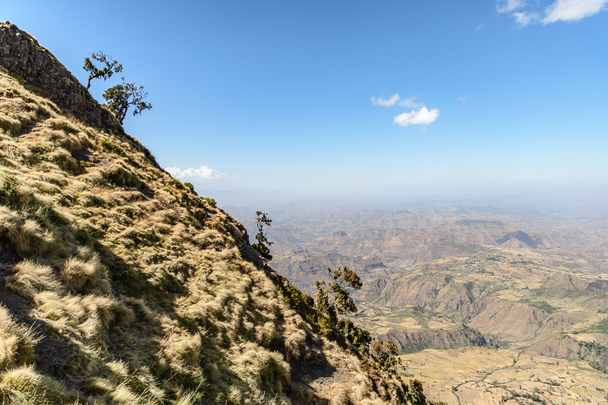
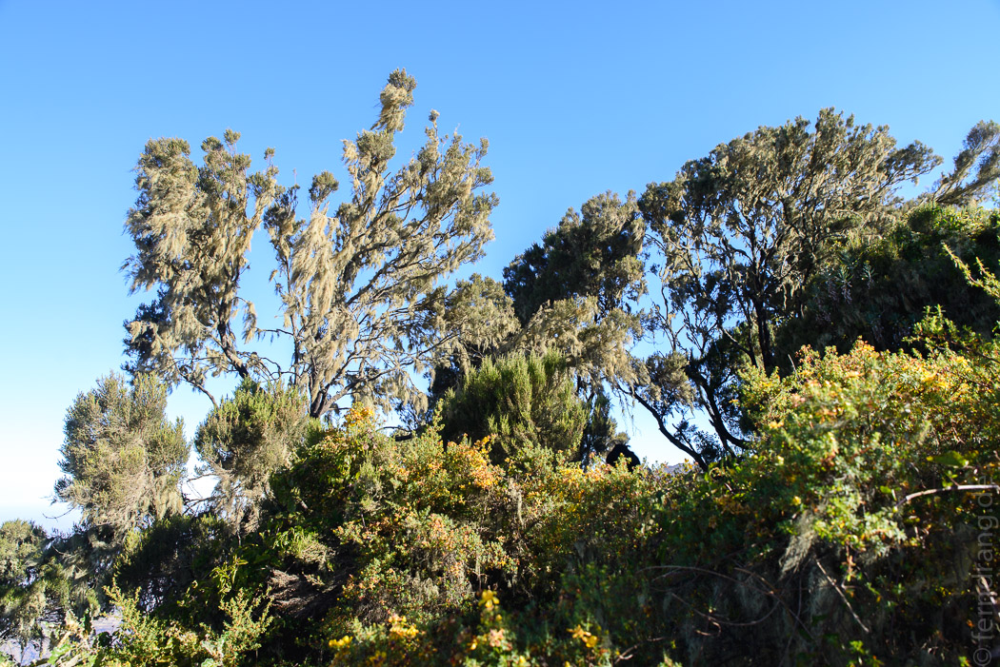
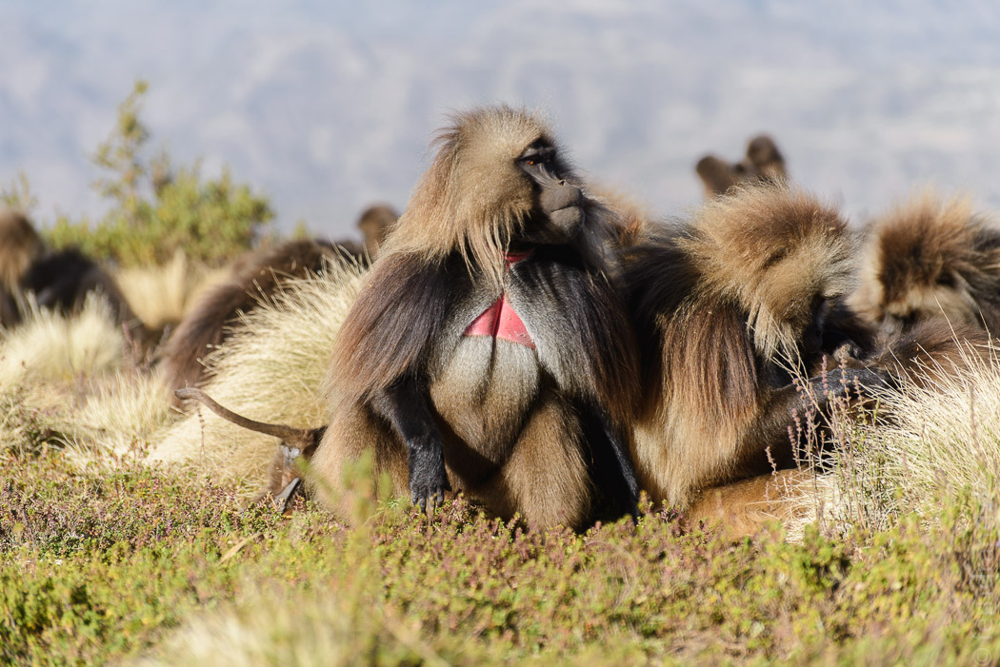
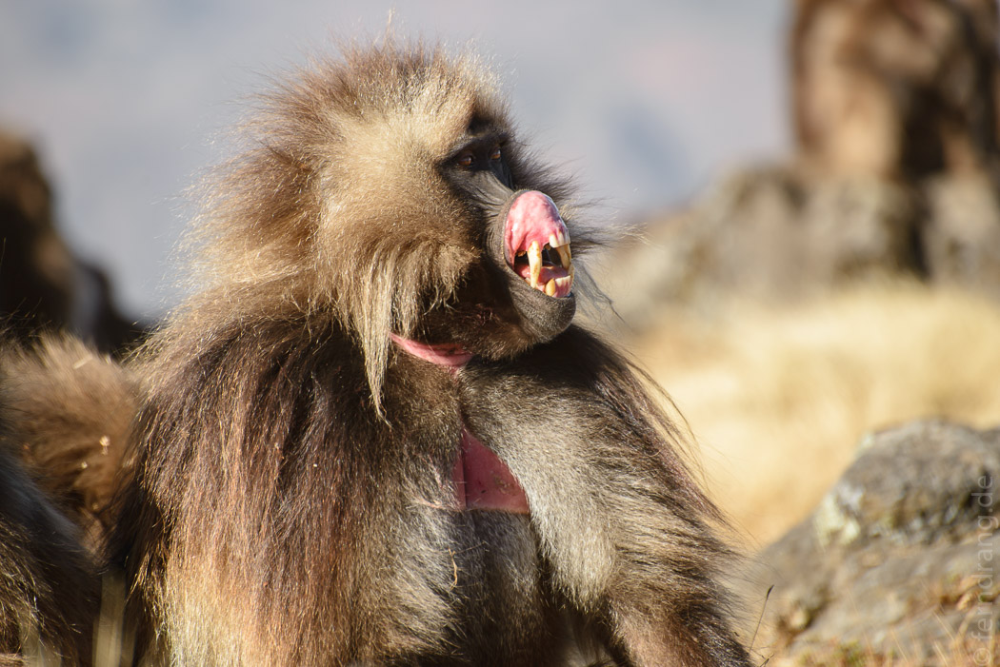

Endlich geht es zur Trekking Tour in die Simiens. Wir werden von einem rappelvollen Minibus abgeholt, der noch zwanzig Stopps macht, bei denen Lebensmittel, Gepäck und Menschen ein- und ausgeladen werden. Erst mittags sind wir in Debark, wo wir den Führer aufgabeln. Von hier aus ist es noch eine weitere Stunde Fahrt durch recht langweilige, bewirtschaftete Hügel. Zwischendurch haben wir noch unseren Scout aufgegabelt, einen betagten Herrn, der für den Nationalpark arbeiten und uns mit seinem uralten Karabiner begleitet. Wir haben nicht herausgefunden wer vor wem beschützt werden soll.
Endlich steigen wir aus und wandern los. Was für wunderschöne Berge! An die senkrechten Wänden klammern sich Wäldchen mit Bäumen voller Flechten, umgeben von Heideland. Der Blick ist überwältigend. Wir wandern die verbleibenden Nachmittagsstunden an der steilen Bergflanke ohne nennenswerte Höhenunterschiede entlang.
 Im ersten Abendlicht treffen wir auf eine große Gruppe Gelada-Paviane, die sich lausen, ärgern oder sonnen. Die Männchen haben eine tolle Löwenmähne und sichern ihren Harem mit viel Zähnefletschen. Die Brust hat einen dreieckigen nackten Fleck mit leuchtend rosa Haut.
 Wir werden mit Kaffee und Popcorn am Lager erwartet. Leider haben wir kein Zelt, weshalb wir in einer fiesen Hütte schlafen müssen.